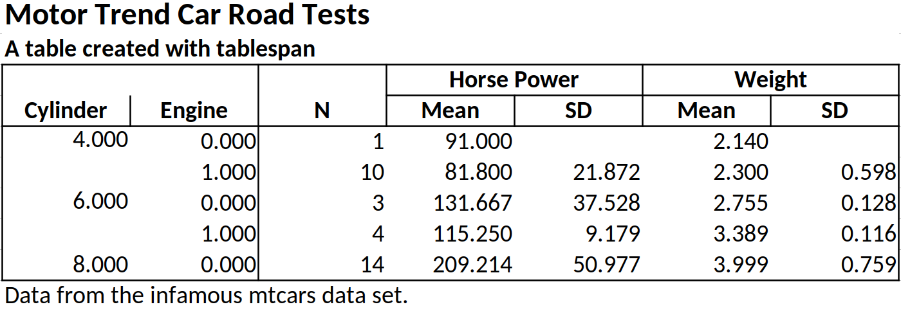
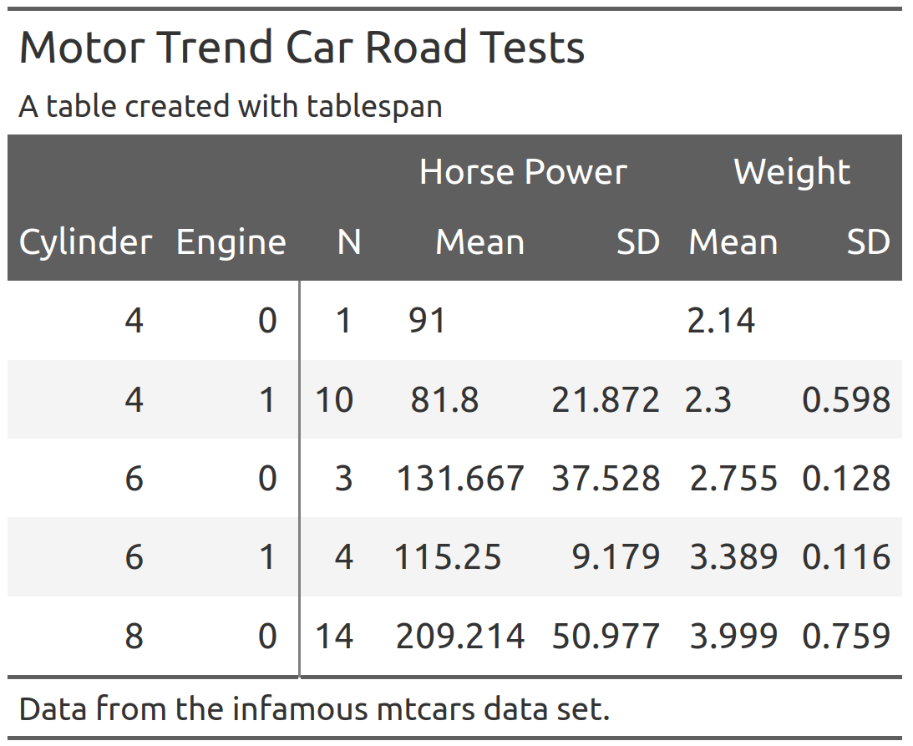

Create satisficing tables in R the formula way.
The objective of tablespan is to provide a “good enough” approach to creating tables by leveraging R’s formulas.
tablespan builds on the awesome packages openxlsx and gt, which allows tables created with tablespan to be exported to the following formats:
Installation
tablespan is not yet available from CRAN. To install from GitHub, run the following lines:
Introduction
R has a large set of great packages that allow you to create and export tables that look exactly like you envisioned. However, sometimes you may just need a good-enough table that is easy to create and share with others. This is where tablespan can be of help.
Let’s assume that we want to share the following table:
library(dplyr)
data("mtcars")
summarized_table <- mtcars |>
group_by(cyl, vs) |>
summarise(N = n(),
mean_hp = mean(hp),
sd_hp = sd(hp),
mean_wt = mean(wt),
sd_wt = sd(wt))
#> `summarise()` has grouped output by 'cyl'. You can override using the `.groups`
#> argument.
print(summarized_table)
#> # A tibble: 5 × 7
#> # Groups: cyl [3]
#> cyl vs N mean_hp sd_hp mean_wt sd_wt
#> <dbl> <dbl> <int> <dbl> <dbl> <dbl> <dbl>
#> 1 4 0 1 91 NA 2.14 NA
#> 2 4 1 10 81.8 21.9 2.30 0.598
#> 3 6 0 3 132. 37.5 2.76 0.128
#> 4 6 1 4 115. 9.18 3.39 0.116
#> 5 8 0 14 209. 51.0 4.00 0.759We don’t want to share the table as is - the variable names are all a bit technical and the table could need some spanners summarizing columns. So, we want to share a table that looks something like this:
| | Horse Power | Weight |
| Cylinder | Engine | Mean | SD | Mean | SD |
| -------- | ------ | ----- | --- | ---- | -- |
| | |tablespan allows us to create this table with a single formula.
Creating a Basic Table
In tablespan, the table headers are defined with a formula. For example, cyl ~ mean_hp + sd_hp defines a table with cyl as the row names and mean_hp and sd_hp as columns:
library(tablespan)
tablespan(data = summarized_table,
formula = cyl ~ mean_hp + sd_hp)
#>
#> | cyl | mean_hp sd_hp |
#> | --- - ------- ----- |
#> | 4 | 91 |
#> | 4 | 81.8 21.87 |
#> | 6 | 131.67 37.53 |
#> | ... | ... ... |Note that the row names (cyl) are in a separate block to the left.
Adding Spanners
Spanners are defined using braces and spanner names. For example, the following defines a spanner for mean_hp and sd_hp with the name Horsepower: cyl ~ (Horsepower = mean_hp + sd_hp):
tablespan(data = summarized_table,
formula = cyl ~ (Horsepower = mean_hp + sd_hp))
#>
#> | | Horsepower |
#> | cyl | mean_hp sd_hp |
#> | --- - ---------- ----- |
#> | 4 | 91 |
#> | 4 | 81.8 21.87 |
#> | 6 | 131.67 37.53 |
#> | ... | ... ... |Spanners can also be nested:
tablespan(data = summarized_table,
formula = cyl ~ (Horsepower = (Mean = mean_hp) + (SD = sd_hp)))
#>
#> | | Horsepower |
#> | | Mean SD |
#> | cyl | mean_hp sd_hp |
#> | --- - ---------- ----- |
#> | 4 | 91 |
#> | 4 | 81.8 21.87 |
#> | 6 | 131.67 37.53 |
#> | ... | ... ... |Renaming Columns
Variable names in an R data.frame are often very technical (e.g., mean_hp and sd_hp). When sharing the table, we may want to replace those names. In the example above, we may want to replace mean_hp and sd_hp with “Mean” and “SD”. In tablespan renaming variables is achieved with new_name:old_name. For example, cyl ~ (Horsepower = Mean:mean_hp + SD:sd_hp) renames mean_hp to Mean and sd_hp to SD:
tablespan(data = summarized_table,
formula = cyl ~ (Horsepower = Mean:mean_hp + SD:sd_hp))
#>
#> | | Horsepower |
#> | cyl | Mean SD |
#> | --- - ---------- ----- |
#> | 4 | 91 |
#> | 4 | 81.8 21.87 |
#> | 6 | 131.67 37.53 |
#> | ... | ... ... |Creating the Full Table
The combination of row names, spanners, and renaming of variables allows creating the full table:
library(dplyr)
library(tablespan)
data("mtcars")
summarized_table <- mtcars |>
group_by(cyl, vs) |>
summarise(N = n(),
mean_hp = mean(hp),
sd_hp = sd(hp),
mean_wt = mean(wt),
sd_wt = sd(wt))
#> `summarise()` has grouped output by 'cyl'. You can override using the `.groups`
#> argument.
tbl <- tablespan(data = summarized_table,
formula = Cylinder:cyl + Engine:vs ~
N +
(`Horse Power` = Mean:mean_hp + SD:sd_hp) +
(`Weight` = Mean:mean_wt + SD:sd_wt),
title = "Motor Trend Car Road Tests",
subtitle = "A table created with tablespan",
footnote = "Data from the infamous mtcars data set.")
tbl
#> Motor Trend Car Road Tests
#> A table created with tablespan
#>
#> | | Horse Power Weight |
#> | Cylinder Engine | N Mean SD Mean SD |
#> | -------- ------ - -- ----------- ----- ------ ---- |
#> | 4 0 | 1 91 2.14 |
#> | 4 1 | 10 81.8 21.87 2.3 0.6 |
#> | 6 0 | 3 131.67 37.53 2.76 0.13 |
#> | ... ... | ... ... ... ... ... |
#> Data from the infamous mtcars data set.Exporting to Excel
Tables created with tablespan can now be translated to xlsx tables with openxlsx using the as_excel function:
# as_excel creates an openxlsx workbook
wb <- as_excel(tbl = tbl)
# Save the workbook as an xlsx file:
# openxlsx::saveWorkbook(wb,
# file = "cars.xlsx",
# overwrite = TRUE)
Styling
While tablespan provides limited styling options, some elements can be adjusted. For example, we may want to print some elements in bold or format numbers differently. In tablespan, styling happens when translating the table to an openxlsx workbook with as_excel. To this end, tablespan provides a styles argument.
Formatting Cells
Let’s assume we want all mean_hp values with a value to be printed in bold. To this end, we first create a new style object using openxlsx:
bold <- openxlsx::createStyle(textDecoration = "bold")Next, we create a cell style with tablespan:
hp_ge_100 <- cell_style(rows = which(summarized_table$mean_hp >= 100),
colnames = "mean_hp",
style = bold,
gridExpand = FALSE)Note that we specify the indices of the rows that we want to be in bold and the column name of the item.
Finally, we pass this style as part of a list to as_excel:
# as_excel creates an openxlsx workbook
wb <- as_excel(tbl = tbl,
styles = tbl_styles(cell_styles = list(hp_ge_100)))
# Save the workbook as an xlsx file:
# openxlsx::saveWorkbook(wb,
# file = "cars.xlsx",
# overwrite = TRUE)
Formatting Data Types
tablespan also allows formatting specific data types. Let’s assume that we want to round all doubles to 3 instead of the default 2 digits. To this end, we use the create_data_styles function, where we specify (1) a function that checks for the data type we want to style (here is.double) and (2) a style for all columns that match that style:
double_style <- create_data_styles(double = list(test = is.double,
style = openxlsx::createStyle(numFmt = "0.000")))
wb <- as_excel(tbl = tbl, styles = tbl_styles(data_styles = double_style))
# Save the workbook as an xlsx file:
# openxlsx::saveWorkbook(wb,
# file = "cars.xlsx",
# overwrite = TRUE)
Exporting to HTML, LaTeX, and RTF
Tables created with tablespan can also be exported to gt which allows saving as HTML, LaTeX, or RTF file. To this end, we simply have to call as_gt on our table:
# Translate to gt:
gt_tbl <- as_gt(tbl = tbl)
gt_tbl

Styling Great Tables
The gt package provides a wide range of functions to adapt the style of the table created with as_gt. For instance, opt_stylize adds a pre-defined style to the entire table:
gt_tbl |>
gt::opt_stylize(style = 6,
color = 'gray')
When adapting the gt object, there is an important detail to keep in mind: To ensure that each table spanner has a unique ID, tablespan will create IDs that differ from the text shown in the spanner. To demonstrate this, Let’s assume that we want to add a spanner above Horse Power and Weight:
gt_tbl |>
gt::tab_spanner(label = "New Spanner",
spanners = c("Horse Power", "Weight"))
#> Error in `gt::tab_spanner()`:
#> ! One or more spanner ID(s) supplied in `spanners` (Horse Power and
#> Weight), for the new spanner with the ID `New Spanner` doesn't belong to any
#> existing spanners.This will throw an error because the spanner IDs are different from the spanner labels. To get the spanner IDs, use gt::tab_info():
gt_tbl |>
gt::tab_info()| Information on ID and Label Values | ||
| ID |
Idx Lvl |
Label |
|---|---|---|
| Columns | ||
| cyl | 1 | Cylinder |
| vs | 2 | Engine |
| N | 3 | N |
| mean_hp | 4 | Mean |
| sd_hp | 5 | SD |
| mean_wt | 6 | Mean |
| sd_wt | 7 | SD |
| Rows | ||
| << Index values 1 to 5 >> |
|
|
| Spanners | ||
| __BASE_LEVEL__Horse Power | 1 | Horse Power |
| __BASE_LEVEL__Weight | 1 | Weight |
The IDs for the spanners can be found at the very bottom. To add another spanner above Horse Power and Weight, we have to use these IDs:
gt_tbl |>
gt::tab_spanner(label = "New Spanner",
spanners = c("__BASE_LEVEL__Horse Power",
"__BASE_LEVEL__Weight"))Tables without row names
Using 1 on the left hand side of the formula creates a table without row names. For example, 1 ~ (Horsepower = Mean:mean_hp + SD:sd_hp) defines
tablespan(data = summarized_table,
formula = 1 ~ (Horsepower = Mean:mean_hp + SD:sd_hp))
#>
#> | Horsepower |
#> | Mean SD |
#> | ---------- ----- |
#> | 91 |
#> | 81.8 21.87 |
#> | 131.67 37.53 |
#> | ... ... |References
- gt: Iannone R, Cheng J, Schloerke B, Hughes E, Lauer A, Seo J, Brevoort K, Roy O (2024). gt: Easily Create Presentation-Ready Display Tables. R package version 0.11.1.9000, https://github.com/rstudio/gt, https://gt.rstudio.com.
- expss: Gregory D et al. (2024). expss: Tables with Labels in R. R package version 0.9.31, https://gdemin.github.io/expss/.
- tables: Murdoch D (2024). tables: Formula-Driven Table Generation. R package version 0.9.31, https://dmurdoch.github.io/tables/.
- openxlsx: Schauberger P, Walker A (2023). openxlsx: Read, Write and Edit xlsx Files. R package version 4.2.5.2, https://CRAN.R-project.org/package=openxlsx.